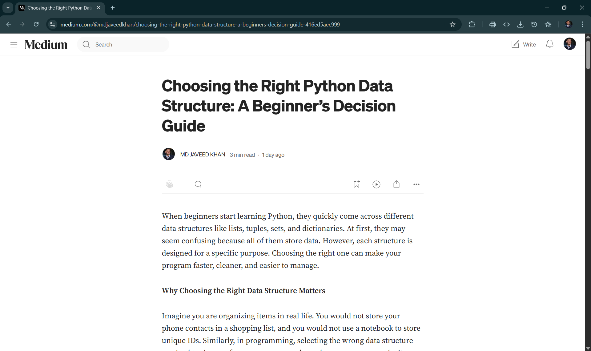

Cybersecurity
Building HeuriGuard: A Hybrid Machine Learning System
An overview of the architecture, models, NLP techniques, and deployment approach behind my real-world cybersecurity application.
Read on MediumWriting
I write about technical projects, Python fundamentals, cybersecurity, deployment, and practical learning resources.
Cybersecurity
An overview of the architecture, models, NLP techniques, and deployment approach behind my real-world cybersecurity application.
Read on Medium
Deployment
A step-by-step guide covering Vercel deployment, DNS configuration, HTTPS setup, and lessons from publishing a professional portfolio.
Read on Medium
Python
A beginner-friendly decision guide for lists, tuples, sets, and dictionaries with real-world examples and performance tradeoffs.
Read on Medium
Educational
An educational blog explaining fasting rules, Sunnahs, spiritual wisdom, and practical guidance for the last ten nights of Ramadan.
Read on Medium